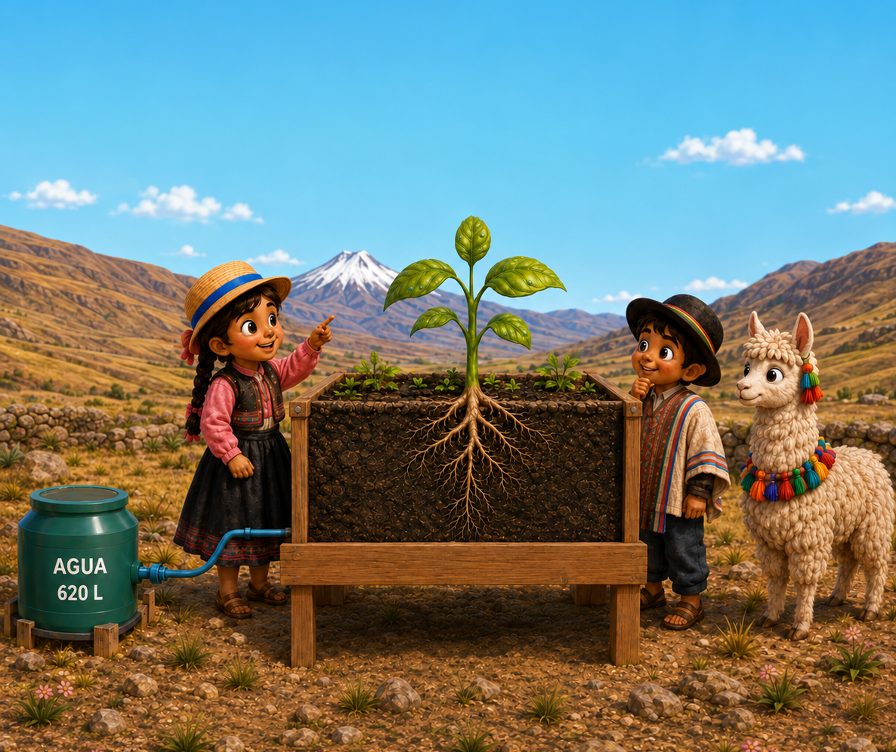

Nuestro huerto
aprende de la tierra
Entre montañas, sol y agua, cada planta tiene algo que enseñarnos. Toca los sensores y descubre su historia.
Elige tu localidad
Los datos y gráficos cambiarán según los sensores del colegio seleccionado.
🔎 Exploración en vivo
¿Qué quieres investigar?

Explora el huerto
Explora el huerto
Selecciona un cartel para conocer esta medición.
- Huerto seleccionado
- Localidad
- Última medición
- Fuente
¿Qué nos muestra?
● Datos demostrativos
▦ Historial del huerto